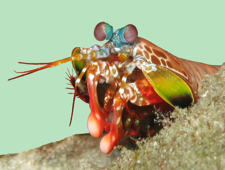

Informações Gerais

Os Stomatopodas apresentam uma grande variação de tamanho, que pode ir de poucos milímetros até aproximadamente 40 cm nas espécies maiores. Eles vivem em fundo consolidado, lodoso ou ainda arenoso, onde cavam seus buracos ou aproveitam-se dos orifícios deixados por outros animais para neles se instalar. São animais exclusivamente carnívoros, alimentando-se de camarões, caranguejos, moluscos, peixes e até mesmo outros da mesma ordem.
Podem ser encontrados em quase todo o litoral brasileiro, mas não são animais fáceis de se observar pelos seus hábitos mais furtivos.
| Nome Ciêntifico | Odontodactylus scyllarus | |
| Reino | Animalia | |
| Filo | Arthropoda | |
| Subfilo | Crustacea | |
| Classe | Malacostraca | |
| Subclasse | Hoplocarida | |
| Ordem | Stomatopoda |
Fatos interessantes sobre o Stomatopoda
O pesadelo do fundo do mar
O Stomatopoda é o pesadelo do fundo do mar. Possui garras na frente de seu corpo que têm a mesma velocidade do tiro de um rifle calibre 22!
Garras super poderosas
Em menos de 3 mil segundos pode atacar a presa com uma força de 1.500 Newtons.